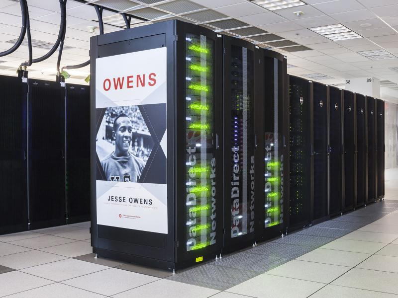
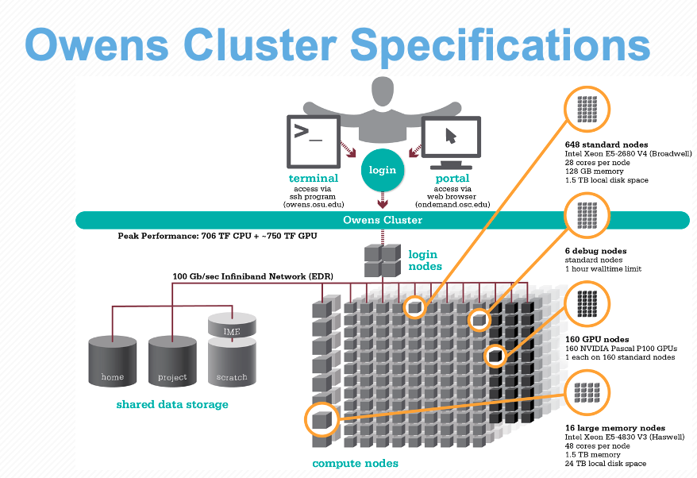

Intro to the Ohio Supercomputer Center (OSC)

1 Introduction
This session will provide an introduction to supercomputers in general and to the Ohio Supercomputer Center (OSC) specifically.
1.1 Supercomputers
A supercomputer (also known as a “compute cluster” or simply a “cluster”) consists of many computers that are connected by a high-speed network, and that can be accessed remotely by its users. In more general terms, supercomputers provide high-performance computing (HPC) resources.
Here are some possible reasons to use a supercomputer instead of your own laptop or desktop:
- Your analyses take a long time to run.
- You analyses need large numbers of CPUs or a large amount of memory.
- You need to run some analyses many times.
- You need to store a lot of data.
- Your analyses require specialized hardware, such as GPUs.
- Your analyses require software available only for the Linux operating system, but you use Windows.
When you’re working RNAseq data or other kinds of genomic data, many of these reasons apply. This can make it hard or simply impossible to do all your work on your personal workstation, and supercomputers provide a solution.
1.2 The Ohio Supercomputer Center (OSC)
The Ohio Supercomputer Center (OSC) is a facility provided by the state of Ohio (not The Ohio State University). It has two supercomputers, lots of storage space, and an excellent infrastructure for accessing these resources. At least for folks at OSU, using OSC is currently usually free in practice. Having such a good HPC resource available at no cost is not something we should take for granted — at many institutions, academics not only have have to pay for these kinds of resources, but those are often more limited and not as easy to access.
In upcoming sessions, we’ll continue to work at OSC, so you will get a fair bit of experience with using it. We’ll also have specific sessions dedicated to using VS Code at OSC, loading and installing software at OSC and using the Slurm job scheduler.
OSC has three main websites:
- https://osc.edu: OSC’s general website, with lots of information about the supercomputers, the software that’s installed, and how to use OSC.
- https://ondemand.osc.edu: A web portal to use OSC resources through your browser (login needed).
- https://my.osc.edu: A site to manage your account and OSC Projects you are an admin for (login needed).
2 The Structure of a Supercomputer Center
Let’s start with some terminology, going from smaller things to bigger things:
- Core / Processor / CPU / Thread — Components of a computer that can each (semi-)indendepently be asked to perform a computing task like running a bioinformatics program. While these terms are not technically all synonyms, we can treat them as such for our purposes.
- Node — A single computer that is a part of a supercomputer and has dozens of cores (i.e., they tend to be more powerful than a personal laptop or desktop).
- Supercomputer / Cluster — Many computers connected by a high-speed network. (“Pitzer” and “Owens” are the two currently active ones at OSC.)
- Supercomputer Center — A facility like OSC that has one or more supercomputers.

This is what the Owens supercomputer at OSC physically looks like:

Like the vast majority of supercomputers, those of OSC run on the Linux operating system (as opposed to on MacOS or Windows). In turn, Linux is a Unix-based operating system like MacOS (but unlike Windows).
We can think of a supercomputer as having three main parts:
- File Systems: Where files are stored (these are shared between the two clusters!)
- Login Nodes: The handful of computers everyone shares after logging in
- Compute Nodes: The many computers you can reserve to run your analyses

Let’s take those in order.
2.1 File Systems
There are 4 main file systems where you can store files at OSC: Home Directories, Project Directories, Scratch Directories, and Compute storage.
| File system | Located within | Quota | Backed up? | Auto-purged? | One for each… |
|---|---|---|---|---|---|
| Home | /users/ |
500 GB / 1 M files | Yes | No | User |
| Project | /fs/ess/ 1 |
Flexible | Yes | No | OSC Project |
| Scratch | /fs/scratch/ 2 |
100 TB | No | After 90 days | OSC Project |
| Compute | $TMPDIR |
1 TB | No | After job completes | Compute job |
You’ll interact most with the Project directories: this is because for most files, you’ll want a permanent and backed-up location (i.e., not Scratch or Compute storage), and the Home directory offers relatively limited storage as well as challenges with file sharing.
We’ll talk about all of this more in upcoming sessions, but to clarify some of the terms and concepts mentioned here:
- “Directory” (or “dir” for short) is a commonly used term in Unix that just means “folder”.
- In the “Located within” column in the table above, the leading forward slash
/signifies the system’s “root” (top-level) directory, and forward slashes are also used to separate directories (unlike in Windows, which uses backslashes). - File and directory locations on a computer are often referred to as “paths”.
$TMPDIRis a so-called “environment variable” that contains the path to the Compute storage directory (in the Unix shell, all variables are referenced by putting a$before their name, and environment variables are in all-caps). A variable is useful in this case, because the location of this storage space will vary depending on the compute node at which it’s located. Along similar lines, your Home directory’s path is stored in$HOME.
2.1.1 Home Directory
When you initially get an account with OSC, a Home directory is created for you, named with your OSC username. This directory will always be within /users/, and then, somewhat strangely, in a directory containing the name of the OSC Project you were first added to (and this will not change even if you’re no longer a member of that project, or if that project ceases to exist). For example, my Home directory is /users/PAS0471/jelmer.
You will only ever have one Home directory. You also cannot expand the standard 500 GB of storage — if you need more space, you should turn to your Project directories.
If possible, I recommend to use your Home directory only for some general files (like some software, tutorials and practice, general scripts and databases), and to use Project directories for all your research project data and results.
2.1.2 Project Directories
Project directories are linked to OSC projects, which are typically set up by PIs. They offer flexibility in terms of the amount of storage available, and also in terms of who can access files in the directory.
By default, all members of an OSC Project have “read access” (the ability to see and copy files) for all files in a project directory, which makes it suitable for collaborating on a research project. But rest assured: except for OSC staff, other people can never move, modify, or delete your files (i.e., they don’t have “write access”) — not even the admins (PIs) for the OSC Project in question.
Like Home directories, Project directories are backed up daily. You don’t have direct access to the backups, but if you’ve accidentally deleted some important files (Linux has no thrash bin!), you can request them to be restored to the way they were on a specific date.
While OSC’s current two clusters, Owens and Pitzer, are largely separate, they do share the same File System. This means that you can access your files in the exact same way regardless of which supercomputer you have connected to.
For example, your Home directory can be accessed using the same path (in my case, /users/PAS0471/jelmer) on Pitzer and Owens.
2.1.3 Temporary storage: Scratch and Compute
Every OSC Project also has a Scratch directory. The two main advantages of Scratch space are that it is effectively unlimited and that it has faster data read and write (“I/O”) speed than Home and Project space. However, it’s not backed up, and files that are unmodified for 90 days are automatically deleted. As such, Scratch storage is mostly useful for intermediate results that are likely not needed again and can be reproduced easily.3
Compute storage space is even more fleeting: as soon as the compute “job” in question has stopped (e.g. your script has finished), these files will be deleted. We’ll talk a bit more about this type of storage later, as using them can save time for I/O-intensive analyses.
2.2 Login Nodes
Login nodes are set aside as an initial landing spot for everyone who logs in to a supercomputer. There are only a handful of them on each supercomputer, and they are shared among everyone and cannot be “reserved”.
As such, login nodes are meant only to do things like organizing your files and creating scripts for compute jobs, and are not meant for any serious computing.
Attempting large computing efforts on these nodes risks taxing the limited resources on these nodes, and bogging things down for everyone. There are checks built in that limit what you are able to do on the login nodes (i.e. jobs running for longer than 20 minutes will be killed), but it’s best to just not push it at all. Any serious computing should be done on the compute nodes.
2.3 Compute Nodes
Compute nodes are really the powerhouse of the supercomputer, and this is where you run your data processing and analysis.
You can use compute nodes by putting in requests for resources, such as the number of nodes, cores, and for how long you will need them. Because many different users are sending such requests –i.e., for “compute jobs” or just “jobs”– all the time, there is software called a job scheduler (specifically, Slurm in case of OSC) that considers each request and assigns the necessary resources to the job as they become available.
Requests for compute node jobs can be made either through the OnDemand website or with commands like sinteractive and sbatch.
For instance, when we start an RStudio session at OSC, we first have to fill out a little form with such a request, and then RStudio will run on a compute node. This is an example of using a compute node interactively — “you” are located on a compute node, and any R command you type will be executed there. More commonly for genomics work, you’ll be using compute nodes non-interactively, that is, through “batch jobs”. When doing so, you will write a script in advance and send it to the job scheduler, which will run the script on a compute node that “you” don’t go to at all.
The session Compute Jobs with Slurm is dedicated to this topic.
Compute nodes come in different shapes and sizes. “Standard nodes” are by far the most numerous (e.g., Owens has 648 and Pitzer has 564 of them) and even those vary in size, from 28 cores per node (Owens) to 48 cores per node (the “expansion” part of Pitzer). Some examples of other types of nodes are ones with extra memory (largemem and hugemem) and ones that provide access to GPUs (Graphical Processing Units) rather than CPUs.
Fortunately, you don’t tend to have to think much about node types as you start using OSC, since Standard nodes are automatically picked by default, and those will serve you well for the vast of majority genomics analysis.4
When we talk about “memory”, this refers to RAM: the data that your computer has actively “loaded” or in use. For example, if you play a computer game or have many browser tabs open, your computer’s memory will be heavily used. Genomics programs sometimes load all of the input data from disk to memory for fast access, or hold a huge assembly graph in memory, and as such may need a lot of memory as well.
Don’t confuse memory with file storage, the data that is on disk, some of which may have been unused for years.
2.4 Putting it together
All these parts are connected together to create a supercomputer — for example, let’s take a look at the specs for Owens now that we understand the components a bit better:

3 Connecting to OSC with OnDemand
The classic way of connecting to supercomputers is using SSH, like with the ssh command in a Unix shell on your computer (see this reference page). However, OSC has pioneered the use of a web portal called OnDemand, which has since become more widely used among supercomputer centers.
The OSC OnDemand website, https://ondemand.osc.edu, then, allows you to access OSC resources through a web browser. When you go there, you first need to log in with your OSC (not OSU!) credentials. After that, you should see a landing page similar to the one below:

The main part of the page (below the logo) only contains some general OSC messages and updates — what we will focus on instead are some of the options in the blue bar along the top.
3.1 File System Access
Let’s start with Files. Hovering over this dropdown menu gives a list of directories you have access to. If you’re account is new, you might only have three: a Home directory, and a Project and Scratch directory for one OSC Project.
For every project you’re associated with, directories are added — I’m associated with quite a few different projects, so I have a long list under Files. I’ll select the Project directory for the MCIC’s main OSC Project, PAS0471, which is /fs/ess/PAS0471:
Once there, I can see a list of directories and files inside this Project directory, and I can click on the directories to explore the contents further.
This interface is much like the file browser on your own computer, so you can also create, delete, move and copy files and folders: see the buttons across the top.
Additionally, there are Upload and Download buttons for uploading files from your computer to OSC, and downloading them from OSC to your computer. These are only suitable for relatively small transfers, roughly below 1 GB. Other options to transfer files to and from OSC are remote transfer commands like scp (also for smaller transfers), and SFTP or Globus for larger transfers. To learn more about these options, see the reference page on OSC file transfer.
We will skip the “Jobs” dropdown menu in the blue top bar, because in later sessions, we will learn to create, submit, and monitor compute jobs at the command line instead, which quickly becomes more efficient as you get the hang of it.
3.2 System Status (in Clusters)
Moving on to “Clusters”, we’ll start with the item at the bottom of that dropdown menu, “System Status”:

This page shows an overview of the current usage of the two clusters, which might help to decide which cluster you want to use and set some expectations for compute job waiting times:

3.3 Unix Shell Access (in Clusters)
Interacting with a supercomputer in a point-and-click manner only goes so far. Using a supercomputer effectively requires interacting with the system using a command-line (CLI) rather than a graphical user (GUI) interface.
Again under the Clusters option in the blue top bar, you can access a Unix shell either on Owens or Pitzer:

I’m selecting a shell on the Pitzer supercomputer, which will open a new browser tab looking like this:

We most commonly interact with a supercomputer using a Unix shell, and we’ll learn about the basics of doing so in an upcoming session. However, we’ll mostly be accessing a Unix shell in a different manner, namely inside the VS Code text editor, which also gives us some additional functionality in a user-friendly way.
3.4 Interactive Apps
We can get access to VS Code, as well as many other programs with GUIs such as RStudio, via the Interactive Apps dropdown menu (and the menu item next to that, My Interactive Sessions, will list the sessions that are currently active as well as finished ones).

In the list, the “VS Code” program is called “Code Server”, much like “RStudio” is called “RStudio Server”. They are the same programs but with minor edits to allow them to run remotely in a browser rather than as locally installed on your own computer.
“Interactive Apps” like VS Code and RStudio run on compute nodes — therefore, we need to fill out a form and specify some details for our interactive compute job request:
- The OSC Project that should be billed for the compute resource usage — a dropdown menu will list all Projects you are a member of.
- The amount of time we want to make a reservation for — we’ll be kicked off as soon as that amount of time has passed!
- The “working directory” (starting location in the file system) for the program, which we can type in the box or select with the “Select Path” button (the default is your Home directory, here referred to as
$HOME). - The software version — the most recent available one should be automatically selected, and that is almost always what you’ll want.
Click on Launch at the bottom and this will send your request to the compute job scheduler. First, your job will be “Queued” — that is, waiting for the job scheduler to allocate resources on the compute nodes to it:

In general, it should be granted resources within a few seconds (the card will then say “Starting”), and be ready for usage (“Running”) in another couple of seconds:

Then, you can click on the blue Connect to VS Code button to open a new browser tab that runs VS Code. We’ll explore VS Code in the next session.
4 Upcoming sessions on OSC
Today, we have learned some of the basics of supercomputers and of accessing OSC. In separate sessions in this series, we will look at:
- Using specific “Interactive Apps” (GUI-based programs):
- VS Code
- RStudio (TBA)
- Loading and installing command-line software at OSC
- Submitting batch jobs using the Slurm scheduler
Additionally, there are pages with reference material (see the right side of the top menu bar of this side) on:
- File transfer to and from OSC
- Using OSC with SSH (rather than through OnDemand)
At-home reading: admin & further resources
Administrative miscellaneae
Requesting & managing OSC Projects, and user accounts
Generally, only PIs request OSC projects, and they typically manage them as well. OSC has this page with more information on how to do so. Whoever manages an OSC Project can add both existing OSC users and new users to the Project. Anyone added to an OSC Project will have access to the project’s directories, and will be able specify this Project when issuing compute node resource requests.When you get added to an OSC Project and don’t yet have an OSC account, you will automatically receive an email with a link that allows you to create an account. It is not possible to create an account before having been added to an OSC Project.
Billing
OSC will bill OSC Projects (not individual users), and only for the following two things:- File storage in the Project Storage file system
- Compute node usage by “core hour” (e.g. using 2 cores for 2 hours = 4 core hours)
The prices for academic usage are quite low (see this page for specifics), and importantly, at OSU, they are often covered at the department level such that individual PIs do not have to directly pay for this at all.
When you use OSC, it’s good practice to acknowledge and cite OSC in your papers, see their citation page.
For many questions such as if you have problems with your account, have problems installing or using specific software, or don’t understand why your jobs keep failing, you can email OSC at oschelp@osc.edu. They are usually very quick to respond!
OSC’s learning resources
To learn more about OSC, I would start with these short courses:
- OSC’s online asynchronous courses
- This includes a number of short videos
- When I tried to access these last, it wasn’t always clear where to go after enrolling, and one of the two courses had even diseappeared from the list. But the website https://scarlet.instructure.com then listed the courses and provided access.
This series of pages is also useful:
- New User Resource Guide
- Supercomputing FAQ
- HOWTOs (tutorials on specific topics)
- Info on batch (non-interactive) compute jobs (rather technical)
- OSC “events” such as Office Hours
Acknowledgements
This page uses material from an OSC Introduction written by Mike Sovic and from OSC’s Kate Cahill Software Carpentry introduction to OSC.
Footnotes
Or
/fs/project/↩︎Or
/fs/ess/scratch↩︎For example, many genome and transcriptome assemblers output a lot of data, but you will only need a few files (like the assembly) for your next steps.↩︎
Some examples where you might need a different type of node are genome or transcriptome assembly where you might need nodes with a lot of memory, or Oxford Nanopore sequence data basecalling where you might need GPUs.↩︎